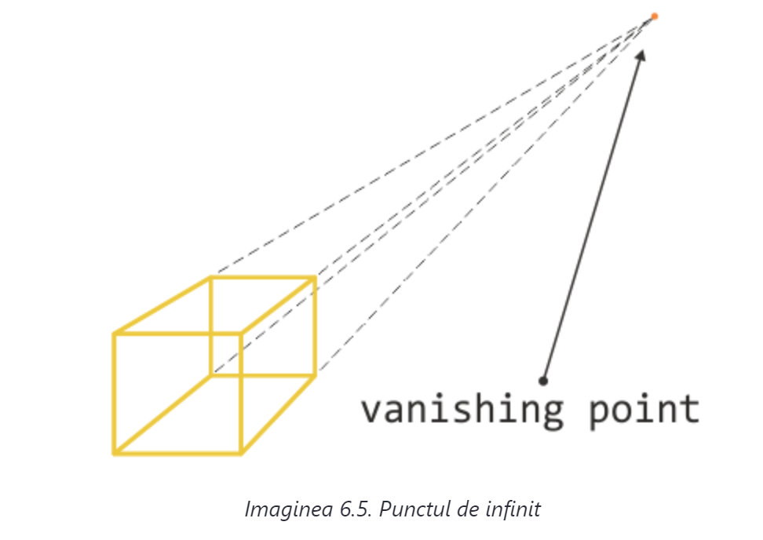
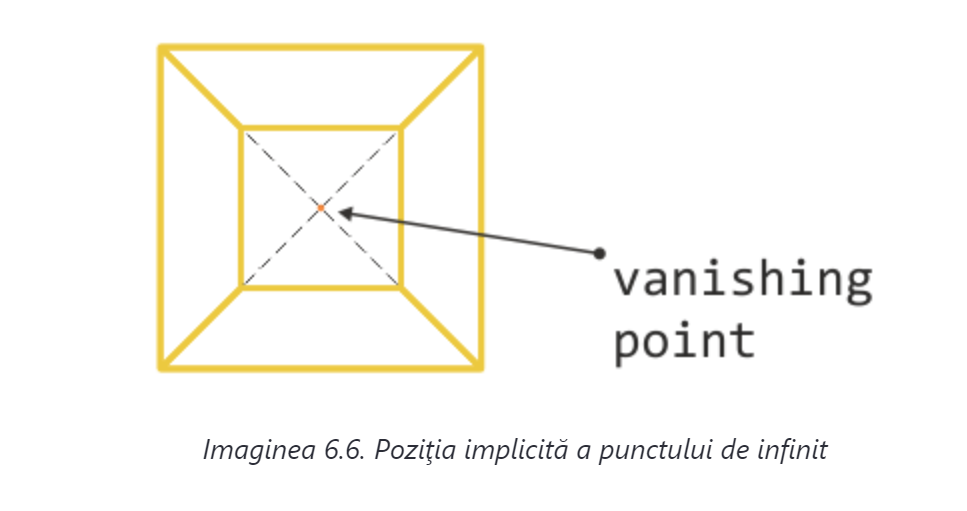

Punctul de referinţă al perspectivei se mai numeşte şi punct de infinit (vanishing point). Acesta este punctul în care, în îndepărtare se intersectează două planuri paralele ale reprezentării 3D (imaginea 6.5.).
În ceea ce privește transformările CSS tridimensionale, punctul de infinit se află, implicit, în centrul elementului, el având definită o perspectivă (imaginea 6.6.).
Analizând imaginile 6.5. şi 6.6. concluzionăm că poziţia punctului de infinit este condiţionată direct de poziţia din care se observă o reprezentare în spaţiul tridimensional.
Poziţia punctului de infinit, iar pe lângă aceasta şi poziţia din care se observă elementul transformat, se poate influenţa folosind proprietatea perspective-origin:
perspective-origin: x-position;
perspective-origin: x-position y-position;
Liniile de cod ilustrează diferite forme în care putem să utilizăm perspective-origin. Este important să menţionăm că proprietatea perspective-origin se foloseşte în combinaţie cu proprietatea perspective, ceea ce înseamnă că ambele proprietăţi menţionate se definesc pe elementul părinte şi se aplică pe elementele descendente:
perspective: 300px;
perspective-origin: 0% 50%;
Mai devreme am spus că punctul de origine se află în centrul elementului cu perspectiva, ceea ce practic înseamnă că este valoarea implicită a acestei proprietăţi:
perspective-origin: 50% 50%;